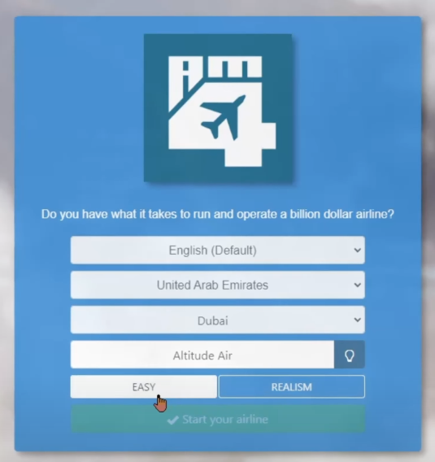
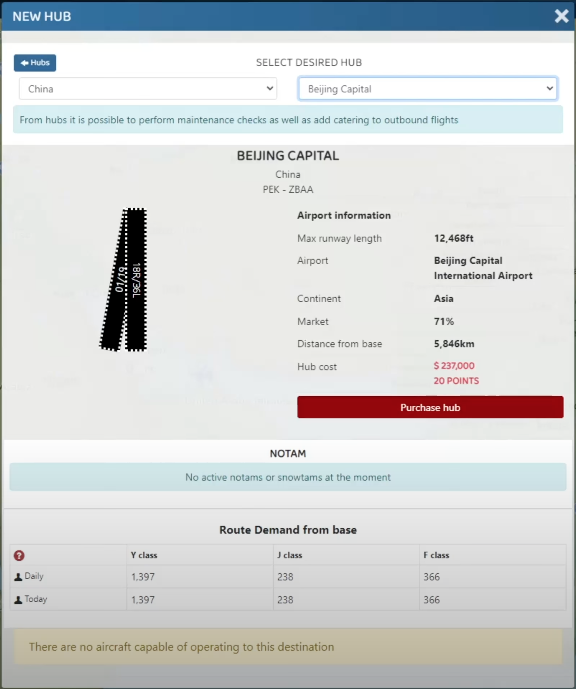
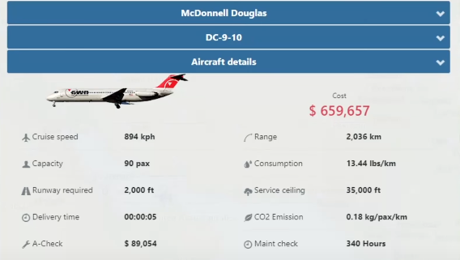
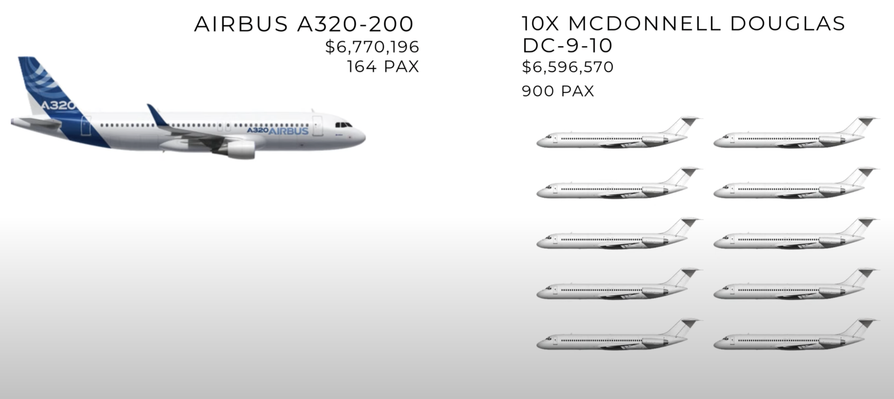
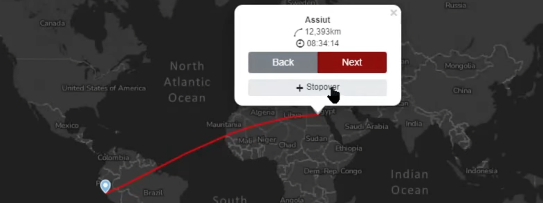
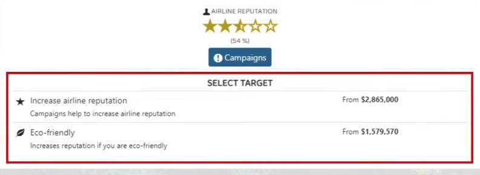
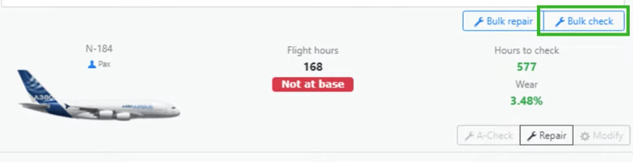

Summary
Step 1: Setting Up Your Airline
When creating your airline, you must choose the location of your hub. Selecting a large hub in a large city
gives you access to high demand routes.
Here are some of the most popular hubs (not in any particular order):
- New York JFK
- Chicago ORD (Not mentioned in the video)
- Los Angeles LAX (Not mentioned in the video)
- San Francisco SFO (Not mentioned in the video)
- London Heathrow LHR
- Dubai DXB
- Buenos Aires EZE (Not mentioned in the video)
- Hong Kong HKG (Not mentioned in the video)
- Beijing PEK (Not mentioned in the video)
- Singapore SIN (Not mentioned in the video)
Easy:
- Faster Progression
- 150% playing speed
- 50% more revenue
- Lower maintenance costs
- No runway requirement

Step 2: Sell Your Starting Aircraft
You will be given a choice between two start aircrafts to start your airline. Two Start Aircrafts:
- Airbus A320-200
- Boeing 737-800
Suggestion: Choose the Airbus A320-200 because it has a better resale value.
Once in the game, restart the application to avoid buying unnecessary planes from the tutorial. After doing so, sell the Airbus A320-200.
Step 3: Purchase Additional Hubs
Using the funds from the Airbus A320-200, purchase at most 10 hubs of your choice (obviously you can buy more but 10 is sufficient).
Preferably,at least one hub in every continent. Purchasing hubs is crucial for expanding your routes and boosting your reputation.
As your fleet grows, you need to expand to new routes. Each hub increases your reputation by 1%. You can only purchase a total
of 10 hubs to contribute a maximum percentage of 10% to your reputation. Hubs unlock new routes and more profit opportunities.
They are worth the investment.
Early Game Tip: Hubs are really cheap early on. The more aircrafts you buy, the higher hubs cost to purchase. After
selling the starter plane, aim to have 10 hubs in total.

Step 4: Purchase Aircraft
The first aircraft you should buy with the remaining funds is the McDonnell Douglas DC-9-10. The McDonnell Douglas DC-9-10 is ideal
for the early game due to their affordability and profitability.
Here are factors to consider when buying planes:
- Price: Start with multiple cheaper planes that carry more passengers compared to one expensive plane.
- Capacity: More planes mean more passengers and more passenger mean higher profits.
- Speed: Faster planes complete more flights, leading to higher overall profits.
- Efficiency: Consider fuel consumption and CO2 emissions to keep operational costs low.


Step 5: Set Up Routes
When setting up routes, look for routes that have high demand and can support multiple daily flights.
Short Haul Flights: More profitable due to ticket pricing, which favors shorter distances. You will make more money
per kilometer on shorter routes
Long Haul Flights: Ideal if you can not manage frequent departures, as they keep your planes in the air longer, earning
money while you are away

Step 6: Purchase Marketing Campaigns
Boost your airline's reputation through marketing campaigns. Your reputation percentage determines how much of the seats of your
aircrafts will be filled. Time your marketing campaigns correctly. Start them before you depart your planes.

Step 7: Depart Planes
Maintain your fleet before departure.
Regularly perform A-Checks to prevent being audtied. Getting audited can inccur a hefty fine you
cannot afford in early-game progression. Perform your A-Checks before your Hours Before Check reaches 0. You will be notified
under the Maintenance section of your game that an A-Check is due when it falls below a certain number of hours.
Your aircrafts' wear is important.

- At 30%, alliance contribution is reduced.
- At 50%, alliance contribution stops.
- At 90%, your aircraft stops flying.
- Buy fuel below $500
- Buy CO2 below $130
NOTE: Keep your CO2 Airline Status positive. Having a negative Airline Status loses your privilege to purchase eco-friendly campaigns.
Step 8: Expand Your Fleet
Aim to have 10 planes at different hubs. Have a goal to achieve 30 McDonnell Douglas DC-9-10s in your fleet before upgrading to the next airplane. Once achieved, move on to the Irkut MC21-400 and aim to have 50-100 Irkut MC-21-400s. This plane will serve as your primary workforce in your mid-game progression.
By following these tips, you can enhance your airline manager experience.